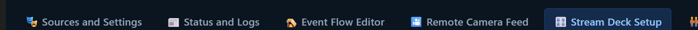
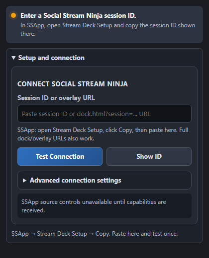

Set up Stream Deck
Connect your Stream Deck to Social Stream Ninja in a couple of minutes.
Your connection
Open this page inside SSApp to detect your session.
Session ID available in SSApp
Using the Chrome extension? Copy your unique session ID from Settings, then paste it into the plugin.
1 · Install
Get the plugin
Install the Social Stream Ninja plugin, then open the Stream Deck desktop app.
Download plugin2 · Connect
Use the same session on both apps
1
Copy the ID
Use the Copy button above. This is the active Social Stream Ninja session.
2
Select an action
In the Stream Deck desktop app, drag in Setup, Timer Dial, or another SSN action.
3
Paste and test
Paste the ID into Setup and choose Test Connection. The status should turn green.
What to look for
The two places you will use


What it can do
Controls that fit a live workflow
Chat and overlaysFeature, unpin, clear, and move through queued messages.
Timers and pollsStart, pause, reset, adjust time, and manage live polls.
SSApp sourcesStart, stop, restart, mute, reveal, and change supported source modes.
CreditsStart, preview, test, and reset collected credits from a key.
Stream Deck +Turn knobs for timer changes and browse recent chat on the touch strip.
The plugin checks the running SSApp version and only shows controls it supports.
Your session ID stays on your computer unless you use it to connect Social Stream Ninja services.